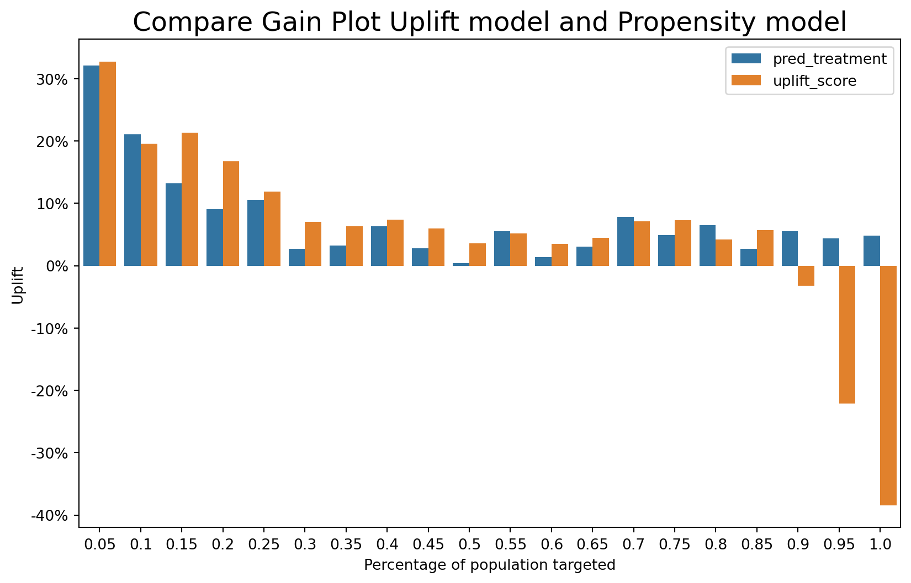
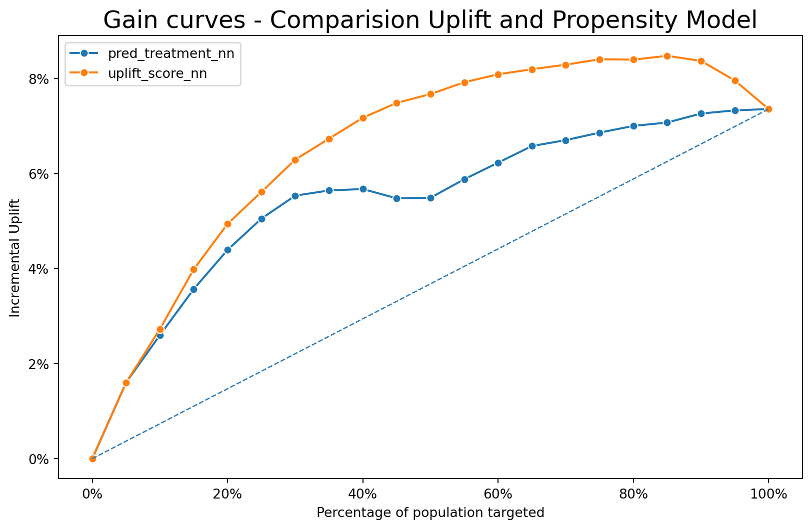

This is visualization of Uplift
Gains curves for training & test set of logistic regression model

45907.75976154993
Uplift plot - Proporposity Model
Compare Uplift model and Propensity model


Neural Network Model
Gain plot - Uplift Model
Gain plot - Uplift plot

Gain curves - Comparision Uplift and Propensity Model
| pred | bins | cum_prop | T_resp | T_n | C_resp | C_n | incremental_resp | inc_uplift | uplift | |
|---|---|---|---|---|---|---|---|---|---|---|
| 0 | pred_treatment_nn | 1 | 0.05 | 201 | 450 | 74 | 586 | 144.174061 | 1.601934 | 0.320387 |
| 1 | pred_treatment_nn | 2 | 0.10 | 351 | 900 | 140 | 1076 | 233.899628 | 2.598885 | 0.198639 |
| 2 | pred_treatment_nn | 3 | 0.15 | 475 | 1350 | 178 | 1561 | 321.060218 | 3.567336 | 0.197205 |
| 3 | pred_treatment_nn | 4 | 0.20 | 589 | 1800 | 220 | 2044 | 395.262231 | 4.391803 | 0.166377 |
| 4 | pred_treatment_nn | 5 | 0.25 | 686 | 2250 | 257 | 2497 | 454.422107 | 5.049135 | 0.133878 |
| 5 | pred_treatment_nn | 6 | 0.30 | 765 | 2700 | 293 | 2962 | 497.916948 | 5.532411 | 0.098136 |
| 6 | pred_treatment_nn | 7 | 0.35 | 833 | 3150 | 346 | 3352 | 507.850835 | 5.642787 | 0.015214 |
| 7 | pred_treatment_nn | 8 | 0.40 | 896 | 3600 | 396 | 3698 | 510.494321 | 5.672159 | -0.004509 |
| 8 | pred_treatment_nn | 9 | 0.45 | 941 | 4050 | 444 | 4013 | 492.906305 | 5.476737 | -0.052381 |
| 9 | pred_treatment_nn | 10 | 0.50 | 982 | 4500 | 477 | 4398 | 493.937244 | 5.488192 | 0.005397 |
| 10 | pred_treatment_nn | 11 | 0.55 | 1023 | 4950 | 486 | 4870 | 529.016427 | 5.877960 | 0.072043 |
| 11 | pred_treatment_nn | 12 | 0.60 | 1053 | 5400 | 491 | 5383 | 560.449378 | 6.227215 | 0.056920 |
| 12 | pred_treatment_nn | 13 | 0.65 | 1083 | 5850 | 496 | 5908 | 591.869330 | 6.576326 | 0.057143 |
| 13 | pred_treatment_nn | 14 | 0.70 | 1102 | 6300 | 503 | 6352 | 603.117758 | 6.701308 | 0.026456 |
| 14 | pred_treatment_nn | 15 | 0.75 | 1116 | 6750 | 505 | 6835 | 617.280176 | 6.858669 | 0.026970 |
| 15 | pred_treatment_nn | 16 | 0.80 | 1131 | 7200 | 506 | 7272 | 630.009901 | 7.000110 | 0.031045 |
| 16 | pred_treatment_nn | 17 | 0.85 | 1143 | 7650 | 507 | 7657 | 636.463497 | 7.071817 | 0.024069 |
| 17 | pred_treatment_nn | 18 | 0.90 | 1161 | 8100 | 509 | 8123 | 653.441216 | 7.260458 | 0.035708 |
| 18 | pred_treatment_nn | 19 | 0.95 | 1170 | 8550 | 510 | 8541 | 659.462592 | 7.327362 | 0.017608 |
| 19 | pred_treatment_nn | 20 | 1.00 | 1174 | 9000 | 512 | 9000 | 662.000000 | 7.355556 | 0.004532 |

Gain plot - Comparision Uplift and Propensity Model
Random Forest
Gain curves - Uplift Model


Gain curves - Propensity Model